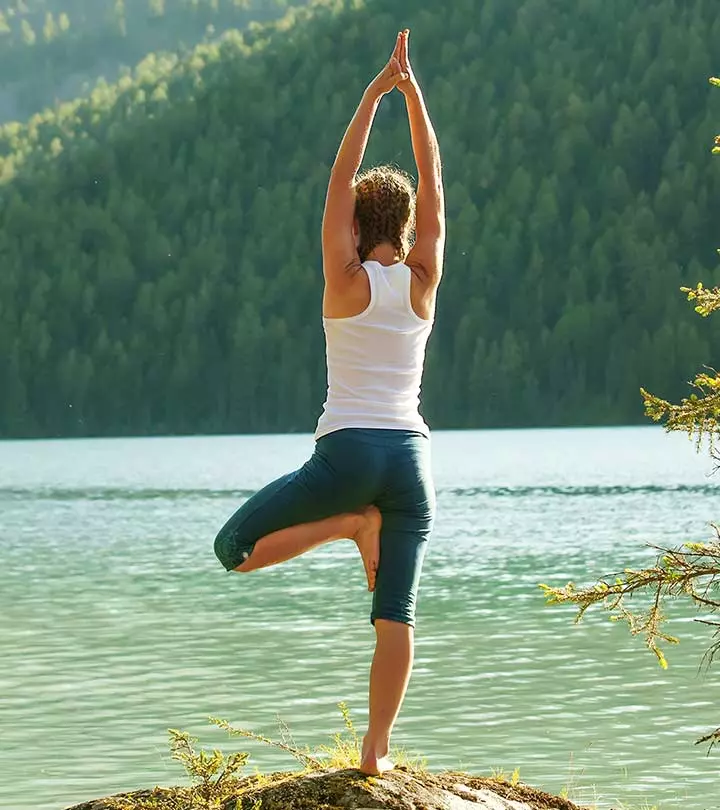

The 4 most important types of exercise
Aerobic exercise
Strength training
Stretching
Balance exercises
1. Aerobic exercise
Aerobic exercise, which speeds up your heart rate and breathing, is important for many body functions. It gives your heart and lungs a workout and increases endurance. "If you're too winded to walk up a flight of stairs, that's a good indicator that you need more aerobic exercise to help condition your heart and lungs and get enough blood to your muscles to help them work efficiently," says Wilson.

Aerobic exercise also helps relax blood vessel walls, lower blood pressure, burn body fat, lower blood sugar levels, reduce inflammation, boost mood, and raise "good" HDL cholesterol. Combined with weight loss, it can lower "bad" LDL cholesterol levels, too. Over the long term, aerobic exercise reduces your risk of heart disease, stroke, type 2 diabetes, breast and colon cancer, depression, and falls.
2.Strength training
As we age, we lose muscle mass. Strength training builds it back. "Regular strength training will help you feel more confident and capable of daily tasks like carrying groceries, gardening, and lifting heavier objects around the house. Strength training will also help you stand up from a chair, get up off the floor, and go upstairs," says Wilson.Strengthening your muscles not only makes you stronger, but also stimulates bone growth, lowers blood sugar, assists with weight control, improves balance and posture, and reduces stress and pain in the lower back and joints.

3.Stretching
Stretching helps maintain flexibility. We often overlook that in youth when our muscles are healthier. But aging leads to a loss of flexibility in the muscles and tendons. Muscles shorten and don't function properly. That increases the risk for muscle cramps and pain, muscle damage, strains, joint pain, and falling, and it also makes it tough to get through daily activities, such as bending down to tie your shoes.Likewise, stretching the muscles routinely makes them longer and more flexible, which increases your range of motion and reduces pain and the risk for injury.

4.Balance exercise
Improving your balance makes you feel steadier on your feet and helps prevent falls. It's especially important as we get older, when the systems that help us maintain balance—our vision, our inner ear, and our leg muscles and joints—tend to break down. "The good news is that training your balance can help prevent and reverse these losses," says Wilson.Many senior centers and gyms offer balance-focused exercise classes, such as tai chi or yoga. It's never too early to start this type of exercise, even if you feel you don't have balance problems.You can also go to a physical therapist, who can determine your current balance abilities and prescribe specific exercises to target your areas of weakness. "That's especially important if you've had a fall or a near-fall, or if you have a fear of falling," explains Wilson.Typical balance exercises include standing on one foot or walking heel to toe, with your eyes open or closed. The physical therapist may also have you focus on joint flexibility, walking on uneven surfaces, and strengthening leg muscles with exercises such as squats and leg lifts. Get the proper training before attempting any of these exercises at home.
